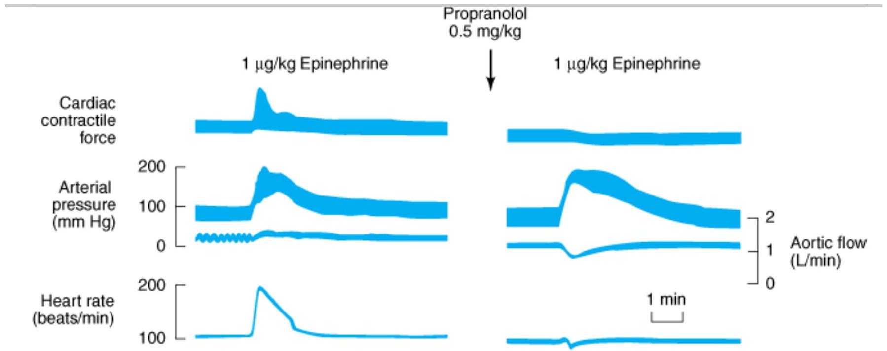
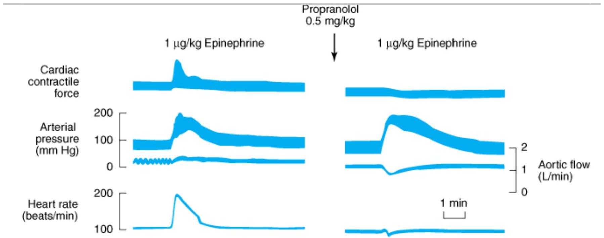

ADRENOCEPTOR ANTAGONI ST DRUGS
Since catecholamines play a role in a variety of physiologic and pathophysiologic responses, drugs that block adrenoceptors have important effects, some of which are of great clinical value. These effects vary dramatically according to the drug's selectivity for and Breceptors. The classification of adrenoceptors into $\alpha_{1}, \alpha_{2}$, and $B$ subtypes and the effects of activating these receptors are discussed in Chapters 6 and 9. Blockade of periphera dopamine receptors is of no recognized clinical importance at present. In contrast, blockade of central nervous system dopamine receptors is very important; drugs that act on these receptors are discussed in Chapters 21 and 29. This chapter deals with pharmacologic antagonist drugs whose major effect is to occupy either $\bar{\alpha}_{1}, \alpha_{2}$, or Breceptors outside the central nervous system and prevent their activation by catecholamines and related agonists.
For pharmacologic research, $\alpha_{1}$ - and $\alpha_{2}$-adrenoceptor antagonist drugs have been very useful in the experimental exploration of autonomic nervous system function. In clinical therapeutics, nonselective $a$. antagonists are used in the treatment of pheochromocytoma (tumors that secrete catecholamines), and $\alpha_{1}$ selective antagonists are used in primary hypertension and benign prostatic hyperplasia. Beta-receptor antagonist drugs have been found useful in a much wider variety of clinical conditions and are firmly establishec in the treatment of hypertension, ischemic heart disease, arrhythmias, endocrinologic and neurologic disorders, glaucoma, and other conditions.
BASI C PHARMACOLOGY OF THE ALPHA-RECEPTOR ANTAGONIST DRUGS
Mechanism of Action
Alpha-receptor antagonists may be reversible or irreversible in their interaction with these receptors. Reversible antagonists dissociate from receptors and the block can be surmounted with sufficiently high concentrations of agonists; irreversible drugs do not dissociate and cannot be surmounted. Phentolamine (Figure 10-1) and prazosin are examples of reversible antagonists. Prazosin (and analogs) and labetalol—drugs used primarily for their antihypertensive effects—as well as several ergot derivatives (see Chapter 16) are also reversible a.adrenoceptor antagonists or partial agonists. Phenoxybenzamine, an agent related to the nitrogen mustards, forms a reactive ethyleneimonium intermediate (Figure 10-1) that covalently binds to a receptors, resulting in irreversible blockade. Figure 10-2 illustrates the effects of a reversible drug in comparison with those of an irreversible agent.

Copyright ©2006 by The McGraw-Hill Companies, Inc. All rights reserved.
Structure of several a-receptor-blocking drugs.
Copyright ©2006 by The McGraw-Hill Companies, Inc. All rights reserved.
Dose-response curves to norepinephrine in the presence of two different a produced in isolated strips of cat spleen, a tissue rich in areceptors, was measured in response to graded doses of norepinephrine. Left: Tolazoline, a reversible blocker, shifted the curve to the right without decreasing the maximum response when present at concentrations of 10 and 20 $\mu$mol/L. Right: Dibenamine, an analog of phenoxybenzamine and irreversible in its action, reduced the maximum response attainable at both concentrations tested. (Modified and reproduced with permission, from Bickerton RK: The response of isolated strips of cat spleen to sympathomimetic drugs and their antagonists. J Pharmacol Exp Ther 1963; 142:99.)
As discussed in Chapters 1 and 2, the duration of action of a reversible antagonist is largely dependent on the half-life of the drug in the body and the rate at which it dissociates from its receptor: The shorter the half-life of the drug in the body, the less time it takes for the effects of the drug to dissipate. In contrast, the effects of an irreversible antagonist may persist long after the drug has been cleared from the plasma. In the case of phenoxybenzamine, the restoration of tissue responsiveness after extensive a-receptor blockade is dependent on synthesis of new receptors, which may take several days. The rate of return of $\alpha_{1}$-adrenoceptor responsiveness may be particularly important in patients having a sudden cardiovascular event or who become candidates for urgent surgery.
Pharmacologic Effects
CARDIOVASCULAR EFFECTS
Because arteriolar and venous tone are determined to a large extent by creceptors on vascular smooth muscle, a-receptor antagonist drugs cause a lowering of peripheral vascular resistance and blood pressure (Figure 10-3). These drugs can prevent the pressor effects of usual doses of cagonists; indeed, in the case of agonists with both and $B_{2}$ effects (eg, epinephrine), selective a-receptor antagonism may convert a pressor to a depressor response (Figure 10-3). This change in response is called epinephrine reversal; it illustrates how the activation of both cand Breceptors in the vasculature may lead to opposite responses. Alpha-receptor antagonists often cause postural hypotension and reflex tachycardia; nonselective ( $a_{1}=a_{2}$, Table 10-1) blockers usually cause significant tachycardia if blood pressure is lowered below normal. Postural hypotension is due to antagonism of sympathetic nervous system stimulation of $a_{1}$ receptors in venous smooth muscle; contraction of veins is an important component of the normal capacity to maintain blood pressure in the upright position since it decreases venous pooling in the periphery. Constriction of arterioles in the legs may also contribute to the postural response. Tachycardia may be more marked with agents that block $a_{2}$-presynaptic receptors in the heart, since the augmented release of norepinephrine will further stimulate Breceptors in the heart.

Copyright ©2006 by The McGraw-Hill Companies, Inc. All rights reserved.
Top: Effects of phentolamine, an a.-receptor-blocking drug, on blood pressure in an anesthetized dog. Epinephrine reversal i demonstrated by tracings showing the response to epinephrine before (middle) and after (bottom) phentolamine. All druć given intravenously. (BP, blood pressure; HR, heart rate.) Reflexes are blunted but not eliminated in this anesthetized animal.
| Receptor Affinity | Antagonists |
|---|---|
| $Q_{1} \ggg>Q_{2}$ | Prazosin, terazosin, doxazosin |
| $a_{1}>a_{2}$ | Phenoxybenzamine |
| $\alpha_{1}=\alpha_{2}$ | Phentolamine |
| $\alpha_{2} \gg \alpha_{1}$ | Rauwolscine, yohimbine, tolazoline |
| Mixed antagonists | |
| $B_{1}=B_{2} \supseteq \alpha_{1}>\alpha_{2}$ | Labetalol, carvedilol |
| $B$ Antagonists | |
| $B_{1} \ggg B_{2}$ | Metoprololol, acebutolol, alprenolol, atenolol, betaxolol, celiprolol, esmolol |
| $B_{1}=B_{2}$ | Propranolol, carteolol, penbutolol, pindolol, timolol |
| $B_{2} \ggg B_{1}$ | Butoxamine |
OTHER EFFECTS
Minor effects that signal the blockade of areceptors in other tissues include miosis and nasal stuffiness. Alpha ${}_{1}$. receptor blockade of the base of the bladder and the prostate is associated with decreased resistance to the flow of urine. Individual agents may have other important effects in addition to a below).
SPECI FIC AGENTS
Phentolamine, an imidazoline derivative, is a potent competitive antagonist at both $\alpha_{1}$ and $\alpha_{2}$ receptors (Table 10-1). Phentolamine causes a reduction in peripheral resistance through blockade of $a_{1}$ receptors and possibly $Q_{2}$ receptors on vascular smooth muscle. The cardiac stimulation induced by phentolamine is due to sympatheti
stimulation of the heart resulting from baroreflex mechanisms. Furthermore, since phentolamine potently block $\alpha_{2}$ receptors, antagonism of presynaptic $\alpha_{2}$ receptors may lead to enhanced release of norepinephrine from sympathetic nerves. In addition to being an $\alpha_{1}$ - and $\alpha_{2}$-receptor antagonist, phentolamine also has minor inhibitory effects at serotonin receptors and agonist effects at muscarinic and $\mathrm{H}_{1}$ and $\mathrm{H}_{2}$ histamine receptors.
Phentolamine has limited absorption after oral administration. Its pharmacokinetic properties are not well known; it may reach peak concentrations within an hour after oral administration and has a half-life of 5-7 hours. The principal adverse effects are related to cardiac stimulation, which may cause severe tachycardia, arrhythmias, and myocardial ischemia, especially after intravenous administration. With oral administration, adverse effects include tachycardia, nasal congestion, and headache.
Phentolamine has been used in the treatment of pheochromocytoma—especially intraoperatively—as well as for male erectile dysfunction by injection intracavernosally and when taken orally (see below).
Phenoxybenzamine binds covalently to areceptors, causing irreversible blockade of long duration (14-48 hours or longer). It is somewhat selective for $a_{1}$ receptors but less so than prazosin (Table 10-1). The drug als( inhibits reuptake of released norepinephrine by presynaptic adrenergic nerve terminals. Phenoxybenzamine blocks histamine ( $\mathrm{H}_{1}$ ), acetylcholine, and serotonin receptors as well as areceptors (see Chapter 16).
The pharmacologic actions of phenoxybenzamine are primarily related to antagonism of a-receptor-mediated events. Most significant is that phenoxybenzamine attenuates catecholamine-induced vasoconstriction. While phenoxybenzamine causes relatively little fall in blood pressure in normal supine individuals, it reduces blood pressure when sympathetic tone is high, eg, as a result of upright posture or because of reduced blood volume. Cardiac output may be increased because of reflex effects and because of some blockade of presynaptic $\alpha_{2}$ receptors in cardiac sympathetic nerves.
Phenoxybenzamine is absorbed after oral administration, although bioavailability is low and its kinetic propertie are not well known. The drug is usually given orally, starting with low doses of 10-20 mg/d and progressively increasing the dose until the desired effect is achieved. A dosage of less than 100 mg/d is usually sufficient to achieve adequate are receptor blockade. The major use of phenoxybenzamine is in the treatment of pheochromocytoma (see below).
Many of the adverse effects of phenoxybenzamine derive from its a-receptor-blocking action; the most important are postural hypotension and tachycardia. Nasal stuffiness and inhibition of ejaculation also occur. Since phenoxybenzamine enters the central nervous system, it may cause less specific effects, including fatigue sedation, and nausea. Because phenoxybenzamine is an alkylating agent, it may have other adverse effects tha have not yet been characterized. Phenoxybenzamine causes tumors in animals, but the clinical implications of this observation are unknown.
Tolazoline is an obsolete agent similar to phentolamine. Ergot derivatives, eg, ergotamine, dihydroergotamine, cause reversible a.receptor blockade, probably via a partial agonist action (Chapter 16).
Prazosin is a piperazinyl quinazoline effective in the management of hypertension (see Chapter 11). It is highl! selective for $\alpha_{1}$ receptors and typically 1000-fold less potent at $\alpha_{2}$ receptors. This may partially explain the relative absence of tachycardia seen with prazosin compared with that reported with phentolamine and phenoxybenzamine. Prazosin leads to relaxation of both arterial and venous vascular smooth muscle, as well as smooth muscle in the prostate, due to blockade of $x_{1}$ receptors. Prazosin is extensively metabolized in humans; because of metabolic degradation by the liver, only about 50% of the drug is available after oral administration.
The half-life is normally about 3 hours.
Terazosin is another reversible $Q_{1}$-selective antagonist that is effective in hypertension (Chapter 11); it is also approved for use in men with urinary symptoms due to benign prostatic hyperplasia (BPH). Terazosin has high bioavailability but is extensively metabolized in the liver, with only a small fraction of unchanged drug excreted in the urine. The half-life of terazosin is 9-12 hours.
Doxazosin is efficacious in the treatment of hypertension and BPH. It differs from prazosin and terazosin in having a longer half-life of about 22 hours. It has moderate bioavailability and is extensively metabolized, with very little parent drug excreted in urine or feces. Doxazosin has active metabolites, although their contribution to the drug's effects is probably small.
Tamsulosin is a competitive $\alpha_{1}$ antagonist with a structure quite different from that of most other $\alpha_{1}$-receptor blockers. It has high bioavailability and a long half-life of 9-15 hours. It is metabolized extensively in the liver. Tamsulosin has higher affinity for $Q_{1\mathrm{A}}$ and receptors than for the subtype. Evidence suggests that tamsulosin has relatively greater potency in inhibiting contraction in prostate smooth muscle versus vascular smooth muscle compared with other -selective antagonists. The drug's efficacy in BPH suggests that the 1 A subtype may be the most important asubtype mediating prostate smooth muscle contraction. Furthermore, compared with other antagonists, tamsulosin has less effect on standing blood pressure in patients.
Nevertheless, caution is appropriate in using any antagonist in patients with diminished sympathetic nervous system function.
Phentolamine, an imidazoline derivative, is a potent competitive antagonist at both $\alpha_{1}$ and $\alpha_{2}$ receptors (Table 10-1). Phentolamine causes a reduction in peripheral resistance through blockade of $a_{1}$ receptors and possibly $Q_{2}$ receptors on vascular smooth muscle. The cardiac stimulation induced by phentolamine is due to sympatheti stimulation of the heart resulting from baroreflex mechanisms. Furthermore, since phentolamine potently block $\alpha_{2}$ receptors, antagonism of presynaptic $\alpha_{2}$ receptors may lead to enhanced release of norepinephrine from sympathetic nerves. In addition to being an $\alpha_{1}$ - and $\alpha_{2}$-receptor antagonist, phentolamine also has minor inhibitory effects at serotonin receptors and agonist effects at muscarinic and $\mathrm{H}_{1}$ and $\mathrm{H}_{2}$ histamine receptors.
Phentolamine has limited absorption after oral administration. Its pharmacokinetic properties are not well known; it may reach peak concentrations within an hour after oral administration and has a half-life of 5-7 hours. The principal adverse effects are related to cardiac stimulation, which may cause severe tachycardia, arrhythmias, and myocardial ischemia, especially after intravenous administration. With oral administration, adverse effects include tachycardia, nasal congestion, and headache.
Phentolamine has been used in the treatment of pheochromocytoma—especially intraoperatively—as well as for male erectile dysfunction by injection intracavernosally and when taken orally (see below).
Phenoxybenzamine binds covalently to areceptors, causing irreversible blockade of long duration (14-48 hours or longer). It is somewhat selective for $a_{1}$ receptors but less so than prazosin (Table 10-1). The drug als( inhibits reuptake of released norepinephrine by presynaptic adrenergic nerve terminals. Phenoxybenzamine blocks histamine ( $\mathrm{H}_{1}$ ), acetylcholine, and serotonin receptors as well as areceptors (see Chapter 16).
The pharmacologic actions of phenoxybenzamine are primarily related to antagonism of a-receptor-mediated events. Most significant is that phenoxybenzamine attenuates catecholamine-induced vasoconstriction. While phenoxybenzamine causes relatively little fall in blood pressure in normal supine individuals, it reduces blood pressure when sympathetic tone is high, eg, as a result of upright posture or because of reduced blood volume. Cardiac output may be increased because of reflex effects and because of some blockade of presynaptic $\alpha_{2}$ receptors in cardiac sympathetic nerves.
Phenoxybenzamine is absorbed after oral administration, although bioavailability is low and its kinetic propertie are not well known. The drug is usually given orally, starting with low doses of 10-20 mg/d and progressively increasing the dose until the desired effect is achieved. A dosage of less than 100 mg/d is usually sufficient to achieve adequate are receptor blockade. The major use of phenoxybenzamine is in the treatment of pheochromocytoma (see below).
Many of the adverse effects of phenoxybenzamine derive from its a-receptor-blocking action; the most important are postural hypotension and tachycardia. Nasal stuffiness and inhibition of ejaculation also occur. Since phenoxybenzamine enters the central nervous system, it may cause less specific effects, including fatigue sedation, and nausea. Because phenoxybenzamine is an alkylating agent, it may have other adverse effects tha have not yet been characterized. Phenoxybenzamine causes tumors in animals, but the clinical implications of this observation are unknown.
Tolazoline is an obsolete agent similar to phentolamine. Ergot derivatives, eg, ergotamine, dihydroergotamine, cause reversible a.receptor blockade, probably via a partial agonist action (Chapter 16).
Prazosin is a piperazinyl quinazoline effective in the management of hypertension (see Chapter 11). It is highl! selective for $\alpha_{1}$ receptors and typically 1000-fold less potent at $\alpha_{2}$ receptors. This may partially explain the relative absence of tachycardia seen with prazosin compared with that reported with phentolamine and phenoxybenzamine. Prazosin leads to relaxation of both arterial and venous vascular smooth muscle, as well as smooth muscle in the prostate, due to blockade of $x_{1}$ receptors. Prazosin is extensively metabolized in humans; because of metabolic degradation by the liver, only about 50% of the drug is available after oral administration.
The half-life is normally about 3 hours. Terazosin is another reversible $Q_{1}$-selective antagonist that is effective in hypertension (Chapter 11); it is also approved for use in men with urinary symptoms due to benign prostatic hyperplasia (BPH). Terazosin has high bioavailability but is extensively metabolized in the liver, with only a small fraction of unchanged drug excreted in the urine. The half-life of terazosin is 9-12 hours.
Doxazosin is efficacious in the treatment of hypertension and BPH. It differs from prazosin and terazosin in having a longer half-life of about 22 hours. It has moderate bioavailability and is extensively metabolized, with very little parent drug excreted in urine or feces. Doxazosin has active metabolites, although their contribution to the drug's effects is probably small.
Tamsulosin is a competitive $\alpha_{1}$ antagonist with a structure quite different from that of most other $\alpha_{1}$-receptor blockers. It has high bioavailability and a long half-life of 9-15 hours. It is metabolized extensively in the liver. Tamsulosin has higher affinity for $Q_{1\mathrm{A}}$ and receptors than for the subtype. Evidence suggests that tamsulosin has relatively greater potency in inhibiting contraction in prostate smooth muscle versus vascular smooth muscle compared with other -selective antagonists. The drug's efficacy in BPH suggests that the 1 A subtype may be the most important asubtype mediating prostate smooth muscle contraction. Furthermore, compared with other antagonists, tamsulosin has less effect on standing blood pressure in patients. Nevertheless, caution is appropriate in using any antagonist in patients with diminished sympathetic nervous system function.
OTHER ALPHA-ADRENOCEPTOR ANTAGONISTS
Alfuzosin is an $a_{1}$-selective quinazoline derivative that is approved for use in BPH. It has a bioavailability of about 60%, is extensively metabolized, and has an elimination half-life of about 5 hours. Indoramin is another $Q_{1}$-selective antagonist that also has efficacy as an antihypertensive. Urapidil is an $Q_{1}$ antagonist (its primary effect) that also has weak $\alpha_{2}$-agonist and 5-HT${}_{1\mathrm{A}}$-agonist actions and weak antagonist action at $B_{1}$ receptors. It is used in Europe as an antihypertensive agent and for benign prostatic hyperplasia. Labetalol has both $\alpha_{1}$ selective and $B$-antagonistic effects; it is discussed below. Neuroleptic drugs such as chlorpromazine and haloperidol are potent dopamine receptor antagonists but are also antagonists at areceptors. Their antagonism of areceptors probably contributes to some of their adverse effects, particularly hypotension. Similarly, the antidepressant trazodone has the capacity to block $\alpha_{1}$ receptors.
Yohimbine, an indole alkaloid, is an $a_{2}$-selective antagonist. It has no established clinical role. Theoretically, i could be useful in autonomic insufficiency by promoting neurotransmitter release through blockade of presynaptic $a_{2}$ receptors. It has been suggested that yohimbine improves male sexual function; however, evidence for this effect in humans is limited. Yohimbine can abruptly reverse the antihypertensive effects of an 2 -adrenoceptor agonist such as clonidine—a potentially serious adverse drug interaction.
Alfuzosin is an $a_{1}$-selective quinazoline derivative that is approved for use in BPH. It has a bioavailability of about 60%, is extensively metabolized, and has an elimination half-life of about 5 hours. Indoramin is another $Q_{1}$-selective antagonist that also has efficacy as an antihypertensive. Urapidil is an $Q_{1}$ antagonist (its primary effect) that also has weak $\alpha_{2}$-agonist and 5-HT${}_{1\mathrm{A}}$-agonist actions and weak antagonist action at $B_{1}$ receptors. It is used in Europe as an antihypertensive agent and for benign prostatic hyperplasia. Labetalol has both $\alpha_{1}$ selective and $B$-antagonistic effects; it is discussed below. Neuroleptic drugs such as chlorpromazine and haloperidol are potent dopamine receptor antagonists but are also antagonists at areceptors. Their antagonism of areceptors probably contributes to some of their adverse effects, particularly hypotension. Similarly, the antidepressant trazodone has the capacity to block $\alpha_{1}$ receptors.
Yohimbine, an indole alkaloid, is an $a_{2}$-selective antagonist. It has no established clinical role. Theoretically, i could be useful in autonomic insufficiency by promoting neurotransmitter release through blockade of presynaptic $a_{2}$ receptors. It has been suggested that yohimbine improves male sexual function; however, evidence for this effect in humans is limited. Yohimbine can abruptly reverse the antihypertensive effects of an 2 -adrenoceptor agonist such as clonidine—a potentially serious adverse drug interaction.
CLI NI CAL PHARMACOLOGY OF THE ALPHA-RECEPTOR- BLOCKI NG DRUGS
Pheochromocytoma
The major clinical use of both phenoxybenzamine and phentolamine is in the management of pheochromocytoma. This tumor is usually found in the adrenal medulla; it typically releases a mixture of epinephrine and norepinephrine. Patients have many symptoms and signs of catecholamine excess, including
intermittent or sustained hypertension, headaches, palpitations, and increased sweating.
The diagnosis of pheochromocytoma is usually made on the basis of chemical assay of circulating catecholamines and urinary excretion of catecholamine metabolites, especially 3 -hydroxy- 4 -methoxymandelic acid, metanephrine, and normetanephrine (see Chapter 6). Measurement of plasma metanephrines is also an effective diagnostic tool. A variety of diagnostic techniques are available to localize a pheochromocytoma diagnosed biochemically, including CT and MRI scans as well as scanning with various radioisotopes.
Unavoidable release of stored catecholamines sometimes occurs during operative manipulation of pheochromocytoma; the resulting hypertension may be controlled with phentolamine or nitroprusside. Nitroprusside has many advantages, particularly since its effects can be more readily titrated and it has a shorter duration of action.
Alpha-receptor antagonists are most useful in the preoperative management of patients with pheochromocytoma (Figure 10-4). Administration of phenoxybenzamine in the preoperative period will help control hypertension and will tend to reverse chronic changes resulting from excessive catecholamine secretion such as plasma volume contraction, if present. Furthermore, the patient's operative course may be simplified. Oral doses of 10-20 mg/d can be increased at intervals of several days until hypertension is controlled. Some physicians give phenoxybenzamine to patients with pheochromocytoma for 1-3 weeks before surgery. Other surgeons prefer to operate on patients in the absence of treatment with phenoxybenzamine, counting on modern anesthetic techniques to control blood pressure and heart rate during surgery. Phenoxybenzamine can be very useful in the chronic treatment of inoperable or metastatic pheochromocytoma. Although there is less experience with alternative drugs, hypertension in patients with pheochromocytoma may also respond to reversible $\alpha_{1}$-selective antagonists or to conventional calcium channel antagonists. Beta-receptor antagonists may be required after a-receptor blockade has been instituted to reverse the cardiac effects of excessive catecholamines. Beta antagonists should not be used prior to establishing effective are-receptor blockade, since unopposed B-receptor blockade could theoretically cause blood pressure elevation from increased vasoconstriction.
Copyright ©2006 by The McGraw-Hill Companies, Inc. All rights reserved.
Effects of phenoxybenzamine (Dibenzyline) on blood pressure in a patient with pheochromocytoma. Dosage of the drug was begun in the third week as shown by the shaded bar. Supine systolic and diastolic pressures are indicated by the circles, the standing pressures by triangles and the hatched area. Note that the a.-blocking drug dramatically reduced blood pressure. The reduction in orthostatic hypotension, which was marked before treatment, is probably due to normalization of blood volume, a variable that is sometimes markedly reduced in patients with long-standing pheochromocytoma-induced hypertension. (Redrawn and reproduced, with permission, from Engelman E, Sjoerdsma A: Chronic medical therapy for pheochromocytoma. Ann Intern Intern Med 1961;61:229.)
Pheochromocytoma is rarely treated with metyrosine (a-methyltyrosine), the a.-methyl analog of tyrosine. This agent is a competitive inhibitor of tyrosine hydroxylase and interferes with synthesis of dopamine, norepinephrine, and epinephrine (see Figure 6-5). Metyrosine is especially useful in symptomatic patients with inoperable or metastatic pheochromocytoma.
The major clinical use of both phenoxybenzamine and phentolamine is in the management of pheochromocytoma. This tumor is usually found in the adrenal medulla; it typically releases a mixture of epinephrine and norepinephrine. Patients have many symptoms and signs of catecholamine excess, including intermittent or sustained hypertension, headaches, palpitations, and increased sweating.
The diagnosis of pheochromocytoma is usually made on the basis of chemical assay of circulating catecholamines and urinary excretion of catecholamine metabolites, especially 3 -hydroxy- 4 -methoxymandelic acid, metanephrine, and normetanephrine (see Chapter 6). Measurement of plasma metanephrines is also an effective diagnostic tool. A variety of diagnostic techniques are available to localize a pheochromocytoma diagnosed biochemically, including CT and MRI scans as well as scanning with various radioisotopes.
Unavoidable release of stored catecholamines sometimes occurs during operative manipulation of pheochromocytoma; the resulting hypertension may be controlled with phentolamine or nitroprusside. Nitroprusside has many advantages, particularly since its effects can be more readily titrated and it has a shorter duration of action.
Alpha-receptor antagonists are most useful in the preoperative management of patients with pheochromocytoma (Figure 10-4). Administration of phenoxybenzamine in the preoperative period will help control hypertension and will tend to reverse chronic changes resulting from excessive catecholamine secretion such as plasma volume contraction, if present. Furthermore, the patient's operative course may be simplified. Oral doses of 10-20 mg/d can be increased at intervals of several days until hypertension is controlled. Some physicians give phenoxybenzamine to patients with pheochromocytoma for 1-3 weeks before surgery. Other surgeons prefer to operate on patients in the absence of treatment with phenoxybenzamine, counting on modern anesthetic techniques to control blood pressure and heart rate during surgery. Phenoxybenzamine can be very useful in the chronic treatment of inoperable or metastatic pheochromocytoma. Although there is less experience with alternative drugs, hypertension in patients with pheochromocytoma may also respond to reversible $\alpha_{1}$-selective antagonists or to conventional calcium channel antagonists. Beta-receptor antagonists may be required after a-receptor blockade has been instituted to reverse the cardiac effects of excessive catecholamines. Beta antagonists should not be used prior to establishing effective are-receptor blockade, since unopposed B-receptor blockade could theoretically cause blood pressure elevation from increased vasoconstriction.
Copyright ©2006 by The McGraw-Hill Companies, Inc. All rights reserved.
Effects of phenoxybenzamine (Dibenzyline) on blood pressure in a patient with pheochromocytoma. Dosage of the drug was begun in the third week as shown by the shaded bar. Supine systolic and diastolic pressures are indicated by the circles, the standing pressures by triangles and the hatched area. Note that the a.-blocking drug dramatically reduced blood pressure. The reduction in orthostatic hypotension, which was marked before treatment, is probably due to normalization of blood volume, a variable that is sometimes markedly reduced in patients with long-standing pheochromocytoma-induced hypertension. (Redrawn and reproduced, with permission, from Engelman E, Sjoerdsma A: Chronic medical therapy for pheochromocytoma. Ann Intern Intern Med 1961;61:229.)
Pheochromocytoma is rarely treated with metyrosine (a-methyltyrosine), the a.-methyl analog of tyrosine. This agent is a competitive inhibitor of tyrosine hydroxylase and interferes with synthesis of dopamine, norepinephrine, and epinephrine (see Figure 6-5). Metyrosine is especially useful in symptomatic patients with inoperable or metastatic pheochromocytoma.
Hypertensive Emergencies
The a-adrenoceptor antagonist drugs have limited application in the management of hypertensive emergencies although labetalol has been used in this setting (see Chapter 11). In theory, as-adrenoceptor antagonists are most useful when increased blood pressure reflects excess circulating concentrations of cagonists, eg, in pheochromocytoma, overdosage of sympathomimetic drugs, or clonidine withdrawal. However, other drugs are generally preferable, since considerable experience is necessary to use phentolamine safely in these settings
and few physicians have such experience.
The a-adrenoceptor antagonist drugs have limited application in the management of hypertensive emergencies although labetalol has been used in this setting (see Chapter 11). In theory, as-adrenoceptor antagonists are most useful when increased blood pressure reflects excess circulating concentrations of cagonists, eg, in pheochromocytoma, overdosage of sympathomimetic drugs, or clonidine withdrawal. However, other drugs are generally preferable, since considerable experience is necessary to use phentolamine safely in these settings and few physicians have such experience.
Chronic Hypertension
Members of the prazosin family of $a_{1}$-selective antagonists are efficacious drugs in the treatment of mild to moderate systemic hypertension (see Chapter 11). They are generally well tolerated by most patients. Howeve their efficacy in preventing heart failure when used as monotherapy for hypertension has been questioned in th ALLHAT study. Their major adverse effect is postural hypotension, which may be severe after the first doses bu is otherwise uncommon. Nonselective cantagonists are not used in primary systemic hypertension. Prazosin an related drugs may also be associated with feelings of dizziness. This symptom may not be due to a fall in blood pressure, but postural changes in blood pressure should be checked routinely in any patient being treated for hypertension.
It is interesting that the use of a-adrenoceptor antagonists such as prazosin has been found to be associated with either no changes in plasma lipids or increased concentrations of high-density lipoproteins (HDL), which could be a favorable alteration. The mechanism for this effect is not known.
Members of the prazosin family of $a_{1}$-selective antagonists are efficacious drugs in the treatment of mild to moderate systemic hypertension (see Chapter 11). They are generally well tolerated by most patients. Howeve their efficacy in preventing heart failure when used as monotherapy for hypertension has been questioned in th ALLHAT study. Their major adverse effect is postural hypotension, which may be severe after the first doses bu is otherwise uncommon. Nonselective cantagonists are not used in primary systemic hypertension. Prazosin an related drugs may also be associated with feelings of dizziness. This symptom may not be due to a fall in blood pressure, but postural changes in blood pressure should be checked routinely in any patient being treated for hypertension.
It is interesting that the use of a-adrenoceptor antagonists such as prazosin has been found to be associated with either no changes in plasma lipids or increased concentrations of high-density lipoproteins (HDL), which could be a favorable alteration. The mechanism for this effect is not known.
Peripheral Vascular Disease
Although a-receptor-blocking drugs have been tried in the treatment of peripheral vascular occlusive disease, there is no evidence that the effects are significant when morphologic changes limit flow in the vessels. Occasionally, individuals with Raynaud's phenomenon and other conditions involving excessive reversible vasospasm in the peripheral circulation do benefit from phentolamine, prazosin, or phenoxybenzamine, althoug calcium channel blockers may be preferable for many patients.
Although a-receptor-blocking drugs have been tried in the treatment of peripheral vascular occlusive disease, there is no evidence that the effects are significant when morphologic changes limit flow in the vessels. Occasionally, individuals with Raynaud's phenomenon and other conditions involving excessive reversible vasospasm in the peripheral circulation do benefit from phentolamine, prazosin, or phenoxybenzamine, althoug calcium channel blockers may be preferable for many patients.
Local Vasoconstrictor Excess
Phentolamine has been used to reverse the intense local vasoconstriction caused by inadvertent infiltration of $\alpha$ agonists (eg, norepinephrine) into subcutaneous tissue during intended intravenous administration. The a. antagonist is administered by local infiltration into the ischemic tissue.
Phentolamine has been used to reverse the intense local vasoconstriction caused by inadvertent infiltration of $\alpha$ agonists (eg, norepinephrine) into subcutaneous tissue during intended intravenous administration. The a. antagonist is administered by local infiltration into the ischemic tissue.
Urinary Obstruction
Benign prostatic hyperplasia is a prevalent disorder in elderly men. A variety of surgical treatments are effectivt in relieving the urinary symptoms of BPH; however, drug therapy is efficacious in many patients. The mechanism of action in improving urine flow involves partial reversal of smooth muscle contraction in the enlarged prostate and in the bladder base. It has been suggested that some $\alpha_{1}$-receptor antagonists may have additional effects on cells in the prostate that help improve symptoms.
A number of well-controlled studies have demonstrated reproducible efficacy of several $a_{1}$-receptor antagonist in patients with BPH. Prazosin, doxazosin, and terazosin are efficacious. These drugs are particularly useful in patients who also have hypertension. Considerable interest has focused on which $a_{1}$-receptor subtype is most important for smooth muscle contraction in the prostate: subtype-selective $Q_{1\mathrm{A}}$-receptor antagonists might lea to improved efficacy and safety in treating this disease. As indicated above, tamsulosin is also efficacious in BPt and has little if any effect on blood pressure at a low dose. This drug may be preferred in patients who have experienced postural hypotension with other $Q_{1}$-receptor antagonists.
Benign prostatic hyperplasia is a prevalent disorder in elderly men. A variety of surgical treatments are effectivt in relieving the urinary symptoms of BPH; however, drug therapy is efficacious in many patients. The mechanism of action in improving urine flow involves partial reversal of smooth muscle contraction in the enlarged prostate and in the bladder base. It has been suggested that some $\alpha_{1}$-receptor antagonists may have additional effects on cells in the prostate that help improve symptoms.
A number of well-controlled studies have demonstrated reproducible efficacy of several $a_{1}$-receptor antagonist in patients with BPH. Prazosin, doxazosin, and terazosin are efficacious. These drugs are particularly useful in patients who also have hypertension. Considerable interest has focused on which $a_{1}$-receptor subtype is most important for smooth muscle contraction in the prostate: subtype-selective $Q_{1\mathrm{A}}$-receptor antagonists might lea to improved efficacy and safety in treating this disease. As indicated above, tamsulosin is also efficacious in BPt and has little if any effect on blood pressure at a low dose. This drug may be preferred in patients who have experienced postural hypotension with other $Q_{1}$-receptor antagonists.
Erectile Dysfunction
A combination of phentolamine with the nonspecific smooth muscle relaxant papaverine, when injected directly into the penis, may cause erections in men with sexual dysfunction. Fibrotic reactions may occur, especially wit
long-term administration. Systemic absorption may lead to orthostatic hypotension; priapism may require direc treatment with an a-adrenoceptor agonist such as phenylephrine. Alternative therapies include prostaglandins (see Chapter 18), sildenafil and other cGMP phosphodiesterase inhibitors (see Chapter 12), and apomorphine.
A combination of phentolamine with the nonspecific smooth muscle relaxant papaverine, when injected directly into the penis, may cause erections in men with sexual dysfunction. Fibrotic reactions may occur, especially wit long-term administration. Systemic absorption may lead to orthostatic hypotension; priapism may require direc treatment with an a-adrenoceptor agonist such as phenylephrine. Alternative therapies include prostaglandins (see Chapter 18), sildenafil and other cGMP phosphodiesterase inhibitors (see Chapter 12), and apomorphine.
Applications of Alphaz Antagonists
Alpha ${}_{2}$ antagonists have relatively little clinical usefulness. There has been experimental interest in the development of highly selective antagonists for use in Raynaud's phenomenon to inhibit smooth muscle contraction, for treatment of type 2 diabetes ($a_{2}$ receptors inhibit insulin secretion), and for treatment of psychiatric depression. It is not known to what extent the recognition of multiple subtypes of $a_{2}$ receptors will lead to development of clinically useful subtype-selective new drugs.
Alpha ${}_{2}$ antagonists have relatively little clinical usefulness. There has been experimental interest in the development of highly selective antagonists for use in Raynaud's phenomenon to inhibit smooth muscle contraction, for treatment of type 2 diabetes ($a_{2}$ receptors inhibit insulin secretion), and for treatment of psychiatric depression. It is not known to what extent the recognition of multiple subtypes of $a_{2}$ receptors will lead to development of clinically useful subtype-selective new drugs.
BASI C PHARMACOLOGY OF THE BETA-RECEPTOR ANTAGONIST DRUGS
Beta-receptor antagonists share the common feature of antagonizing the effects of catecholamines at $B$ adrenoceptors. Beta-blocking drugs occupy Breceptors and competitively reduce receptor occupancy by catecholamines and other Bagonists. (A few members of this group, used only for experimental purposes, bind irreversibly to Breceptors.) Most B-blocking drugs in clinical use are pure antagonists; that is, the occupancy of a Breceptor by such a drug causes no activation of the receptor. However, some are partial agonists; that is, they cause partial activation of the receptor, albeit less than that caused by the full agonists epinephrine and isoproterenol. As described in Chapter 2, partial agonists inhibit the activation of Breceptors in the presence of high catecholamine concentrations but moderately activate the receptors in the absence of endogenous agonists. Finally, evidence suggests that some Bblockers (eg, betaxolol, metoprolol) are inverse agonistsdrugs that reduce constitutive activity of Breceptors—in some tissues. The clinical significance of this property is not known.
Another major difference among the many $B$-receptor-blocking drugs concerns their relative affinities for $B_{1}$ anc $B_{2}$ receptors (Table 10-1). Some of these antagonists have a higher affinity for $B_{1}$ than for $B_{2}$ receptors, and this selectivity may have important clinical implications. Since none of the clinically available $B$-receptor antagonists are absolutely specific for $B_{1}$ receptors, the selectivity is dose-related; it tends to diminish at higher drug concentrations. Other major differences among Bantagonists relate to their pharmacokinetic characteristic and local anesthetic membrane-stabilizing effects.
Chemically, the $B$-receptor-antagonist drugs (Figure 10-5) resemble isoproterenol (see Figure 9-3), a potent $B$. receptor agonist.

Copyright ©2006 by The McGraw-Hill Companies, Inc. All rights reserved.
Structures of some B-receptor antagonists.
Pharmacokinetic Properties of the Beta-Receptor Antagonists
ABSORPTION
Most of the drugs in this class are well absorbed after oral administration; peak concentrations occur 1-3 hours after ingestion. Sustained-release preparations of propranolol and metoprolol are available.
Most of the drugs in this class are well absorbed after oral administration; peak concentrations occur 1-3 hours after ingestion. Sustained-release preparations of propranolol and metoprolol are available.
BI OAVAI LABI LI TY
Propranolol undergoes extensive hepatic (first-pass) metabolism; its bioavailability is relatively low (Table 10-2). The proportion of drug reaching the systemic circulation increases as the dose is increased, suggesting that hepatic extraction mechanisms may become saturated. A major consequence of the low bioavailability of propranolol is that oral administration of the drug leads to much lower drug concentrations than are achieved after intravenous injection of the same dose. Because the first-pass effect varies among individuals, there is great individual variability in the plasma concentrations achieved after oral propranolol. For the same reason, bioavailability is limited to varying degrees for most Bantagonists with the exception of betaxolol, penbutolol, pindolol, and sotalol.
Table 10-2. Properties of Several Beta-Receptor-Blocking Drugs.
Selectivity
Partial Agonist Activity
Local Anesthetic Action
Lipid Solubility
Elimination Half-Life
Approximate Bioavailability
Agent
$B_{1}$
Yes
Yes
Low
3-4 hours
50
Acebutolol
$B_{1}$
No
No
Low
6-9 hours
40
Atenolol
$B_{1}$
No
Slight
Low
14-22 hours
90
Betaxolol
$B_{1}$
No
No
Low
9-12 hours
80
Bisoprolol
None
Yes
No
Low
6 hours
85
Carteolol
None
No
No
High
7-10 hours
25-35
Carvedilol ${}^{1}$
$B_{1}$
Yes
No
Low
4-5 hours
70
Celiprolol
$B_{1}$
No
No
Low
10 minutes
0
Esmolol
None
Yes
Yes
Moderate
5 hours
30
Labetalol ${}^{1}$
$B_{1}$
No
Yes
Moderate
3-4 hours
50
Metoprolol
None
No
No
Low
14-24 hours
33
Nadolol
None
Yes
No
High
5 hours
>90
Penbutolol
None
Yes
Yes
Moderate
3-4 hours
90
Pindolol
None
No
Yes
High
3.5-6 hours
30${}^{2}$
Propranolol
None
No
No
Low
12 hours
90
Sotalol
None
No
No
Moderate
4-5 hours
50
Timolol
${}^{1}$ Carvedilol and labetalol also cause ${}_{1}$ adrenoceptor blockade.
${}^{2}$ Bioavailability is dose-dependent.
Propranolol undergoes extensive hepatic (first-pass) metabolism; its bioavailability is relatively low (Table 10-2). The proportion of drug reaching the systemic circulation increases as the dose is increased, suggesting that hepatic extraction mechanisms may become saturated. A major consequence of the low bioavailability of propranolol is that oral administration of the drug leads to much lower drug concentrations than are achieved after intravenous injection of the same dose. Because the first-pass effect varies among individuals, there is great individual variability in the plasma concentrations achieved after oral propranolol. For the same reason, bioavailability is limited to varying degrees for most Bantagonists with the exception of betaxolol, penbutolol, pindolol, and sotalol.
| Selectivity | Partial Agonist Activity | Local Anesthetic Action | Lipid Solubility | Elimination Half-Life | Approximate Bioavailability | Agent |
|---|---|---|---|---|---|---|
| $B_{1}$ | Yes | Yes | Low | 3-4 hours | 50 | Acebutolol |
| $B_{1}$ | No | No | Low | 6-9 hours | 40 | Atenolol |
| $B_{1}$ | No | Slight | Low | 14-22 hours | 90 | Betaxolol |
| $B_{1}$ | No | No | Low | 9-12 hours | 80 | Bisoprolol |
| None | Yes | No | Low | 6 hours | 85 | Carteolol |
| None | No | No | High | 7-10 hours | 25-35 | Carvedilol ${}^{1}$ |
| $B_{1}$ | Yes | No | Low | 4-5 hours | 70 | Celiprolol |
| $B_{1}$ | No | No | Low | 10 minutes | 0 | Esmolol |
| None | Yes | Yes | Moderate | 5 hours | 30 | Labetalol ${}^{1}$ |
| $B_{1}$ | No | Yes | Moderate | 3-4 hours | 50 | Metoprolol |
| None | No | No | Low | 14-24 hours | 33 | Nadolol |
| None | Yes | No | High | 5 hours | >90 | Penbutolol |
| None | Yes | Yes | Moderate | 3-4 hours | 90 | Pindolol |
| None | No | Yes | High | 3.5-6 hours | 30${}^{2}$ | Propranolol |
| None | No | No | Low | 12 hours | 90 | Sotalol |
| None | No | No | Moderate | 4-5 hours | 50 | Timolol |
${}^{1}$ Carvedilol and labetalol also cause ${}_{1}$ adrenoceptor blockade.
${}^{2}$ Bioavailability is dose-dependent.
DISTRIBUTION AND CLEARANCE
The Bantagonists are rapidly distributed and have large volumes of distribution. Propranolol and penbutolol are quite lipophilic and readily cross the blood-brain barrier (Table 10-2). Most Bantagonists have half-lives in the range of 3-10 hours. A major exception is esmolol, which is rapidly hydrolyzed and has a half-life of approximately 10 minutes. Propranolol and metoprolol are extensively metabolized in the liver, with little unchanged drug appearing in the urine. The cytochrome P450 2D6 (CYP2D6) genotype is a major determinant of interindividual differences in metoprolol plasma clearance (see Chapter 4). Poor metabolizers exhibit threefol tenfold higher plasma concentrations after administration of metoprolol than extensive metabolizers. Atenolol, celiprolol, and pindolol are less completely metabolized. Nadolol is excreted unchanged in the urine and has the longest half-life of any available Bantagonist (up to 24 hours). The half-life of nadolol is prolonged i renal failure. The elimination of drugs such as propranolol may be prolonged in the presence of liver disease, diminished hepatic blood flow, or hepatic enzyme inhibition. It is notable that the pharmacodynamic effects of these drugs are often prolonged well beyond the time predicted from half-life data.
The Bantagonists are rapidly distributed and have large volumes of distribution. Propranolol and penbutolol are quite lipophilic and readily cross the blood-brain barrier (Table 10-2). Most Bantagonists have half-lives in the range of 3-10 hours. A major exception is esmolol, which is rapidly hydrolyzed and has a half-life of approximately 10 minutes. Propranolol and metoprolol are extensively metabolized in the liver, with little unchanged drug appearing in the urine. The cytochrome P450 2D6 (CYP2D6) genotype is a major determinant of interindividual differences in metoprolol plasma clearance (see Chapter 4). Poor metabolizers exhibit threefol tenfold higher plasma concentrations after administration of metoprolol than extensive metabolizers. Atenolol, celiprolol, and pindolol are less completely metabolized. Nadolol is excreted unchanged in the urine and has the longest half-life of any available Bantagonist (up to 24 hours). The half-life of nadolol is prolonged i renal failure. The elimination of drugs such as propranolol may be prolonged in the presence of liver disease, diminished hepatic blood flow, or hepatic enzyme inhibition. It is notable that the pharmacodynamic effects of these drugs are often prolonged well beyond the time predicted from half-life data.
Pharmacodynamics of the Beta-Receptor-Antagonist Drugs
Most of the effects of these drugs are due to occupancy and blockade of Breceptors. However, some actions may be due to other effects, including partial agonist activity at Breceptors and local anesthetic action, which differ among the Bblockers (Table 10-2).
EFFECTS ON THE CARDIOVASCULAR SYSTEM
Beta-blocking drugs given chronically lower blood pressure in patients with hypertension (see Chapter 11). The mechanisms involved are not fully understood but probably include effects on the heart and blood vessels, suppression of the renin-angiotensin system, and perhaps effects in the central nervous system or elsewhere. I contrast, conventional doses of these drugs do not usually cause hypotension in healthy individuals with norma blood pressure.
Beta-receptor antagonists have prominent effects on the heart (Figure 10-6) and are very valuable in the treatment of angina (see Chapter 12) and chronic heart failure (see Chapter 13) and following myocardial infarction (see Chapter 14). The negative inotropic and chronotropic effects are predictable from the role of adrenoceptors in regulating these functions. Slowed atrioventricular conduction with an increased PR interval is a related result of adrenoceptor blockade in the atrioventricular node. In the vascular system, $B$-receptor blockade opposes $B_{2}$-mediated vasodilation. This may acutely lead to a rise in peripheral resistance from
unopposed a-receptor-mediated effects as the sympathetic nervous system discharges in response to lowered blood pressure due to the fall in cardiac output. Nonselective and $B_{1}$-blocking drugs antagonize the release of renin caused by the sympathetic nervous system.
Overall, although the acute effects of these drugs may include a rise in peripheral resistance, chronic drug administration leads to a fall in peripheral resistance in patients with hypertension. How this adjustment occurs is not yet clear.

Copyright ©2006 by The McGraw-Hill Companies, Inc. All rights reserved.
The effect in an anesthetized dog of the injection of epinephrine before and after propranolol. In the presence of a B-receptor-blocking agent, epinephrine no longer augments the force of contraction (measured by a strain gauge attached to the ventricular wall) nor increases cardiac rate. Blood pressure is still elevated by epinephrine because vasoconstriction is nc blocked. (Reproduced, with permission, from Shanks RG: The pharmacology of Bsympathetic blockade. Am J Cardiol 1966; 18: 312.)
Beta-blocking drugs given chronically lower blood pressure in patients with hypertension (see Chapter 11). The mechanisms involved are not fully understood but probably include effects on the heart and blood vessels, suppression of the renin-angiotensin system, and perhaps effects in the central nervous system or elsewhere. I contrast, conventional doses of these drugs do not usually cause hypotension in healthy individuals with norma blood pressure.
Beta-receptor antagonists have prominent effects on the heart (Figure 10-6) and are very valuable in the treatment of angina (see Chapter 12) and chronic heart failure (see Chapter 13) and following myocardial infarction (see Chapter 14). The negative inotropic and chronotropic effects are predictable from the role of adrenoceptors in regulating these functions. Slowed atrioventricular conduction with an increased PR interval is a related result of adrenoceptor blockade in the atrioventricular node. In the vascular system, $B$-receptor blockade opposes $B_{2}$-mediated vasodilation. This may acutely lead to a rise in peripheral resistance from unopposed a-receptor-mediated effects as the sympathetic nervous system discharges in response to lowered blood pressure due to the fall in cardiac output. Nonselective and $B_{1}$-blocking drugs antagonize the release of renin caused by the sympathetic nervous system. Overall, although the acute effects of these drugs may include a rise in peripheral resistance, chronic drug administration leads to a fall in peripheral resistance in patients with hypertension. How this adjustment occurs is not yet clear.
Copyright ©2006 by The McGraw-Hill Companies, Inc. All rights reserved.
The effect in an anesthetized dog of the injection of epinephrine before and after propranolol. In the presence of a B-receptor-blocking agent, epinephrine no longer augments the force of contraction (measured by a strain gauge attached to the ventricular wall) nor increases cardiac rate. Blood pressure is still elevated by epinephrine because vasoconstriction is nc blocked. (Reproduced, with permission, from Shanks RG: The pharmacology of Bsympathetic blockade. Am J Cardiol 1966; 18: 312.)
EFFECTS ON THE RESPIRATORY SYSTEM
Blockade of the $B_{2}$ receptors in bronchial smooth muscle may lead to an increase in airway resistance, particularly in patients with asthma. Beta ${}_{1}$-receptor antagonists such as metoprolol and atenolol may have some advantage over nonselective Bantagonists when blockade of $B_{1}$ receptors in the heart is desired and $B_{2}$ receptor blockade is undesirable. However, no currently available $B_{1}$-selective antagonist is sufficiently specific to completely avoid interactions with $B_{2}$ adrenoceptors. Consequently, these drugs should generally be avoided in patients with asthma. On the other hand, many patients with chronic obstructive pulmonary disease (COPD) may tolerate these drugs quite well and the benefits, for example in patients with concomitant ischemic heart disease, may outweigh the risks.
Blockade of the $B_{2}$ receptors in bronchial smooth muscle may lead to an increase in airway resistance, particularly in patients with asthma. Beta ${}_{1}$-receptor antagonists such as metoprolol and atenolol may have some advantage over nonselective Bantagonists when blockade of $B_{1}$ receptors in the heart is desired and $B_{2}$ receptor blockade is undesirable. However, no currently available $B_{1}$-selective antagonist is sufficiently specific to completely avoid interactions with $B_{2}$ adrenoceptors. Consequently, these drugs should generally be avoided in patients with asthma. On the other hand, many patients with chronic obstructive pulmonary disease (COPD) may tolerate these drugs quite well and the benefits, for example in patients with concomitant ischemic heart disease, may outweigh the risks.
EFFECTS ON THE EYE
Several B-blocking agents reduce intraocular pressure, especially in glaucomatous eyes. The mechanism usuall reported is decreased aqueous humor production. (See Clinical Pharmacology and The Treatment of Glaucoma. The Treatment of Glaucoma
Glaucoma is a major cause of blindness and of great pharmacologic interest because the chronic form often
responds to drug therapy. The primary manifestation is increased intraocular pressure not initially associated with symptoms. Without treatment, increased intraocular pressure results in damage to the retina and optic nerve, with restriction of visual fields and, eventually, blindness. Intraocular pressure is easily measured as par of the routine ophthalmologic examination. Two major types of glaucoma are recognized: open-angle and closed-angle (or narrow-angle). The closed-angle form is associated with a shallow anterior chamber, in which i dilated iris can occlude the outflow drainage pathway at the angle between the cornea and the ciliary body (se Figure 6-9). This form is associated with acute and painful increases of pressure, which must be controlled on an emergency basis with drugs or prevented by surgical removal of part of the iris (iridectomy). The open-angle form of glaucoma is a chronic condition, and treatment is largely pharmacologic. Because intraocular pressure i a function of the balance between fluid input and drainage out of the globe, the strategies for the treatment of open-angle glaucoma fall into two classes: reduction of aqueous humor secretion and enhancement of aqueous outflow. Five general groups of drugs—cholinomimetics, agonists, Bblockers, prostaglandin $F_{2}$ analogs, and diuretics—have been found to be useful in reducing intraocular pressure and can be related to these strategies as shown in Table 10-3. Of the five drug groups listed in Table 10-3, the prostaglandin analogs and the $B$ blockers are the most popular. This popularity results from convenience (once- or twice-daily dosing) and relative lack of adverse effects (except, in the case of Bblockers, in patients with asthma or cardiac pacemaker or conduction pathway disease). Other drugs that have been reported to reduce intraocular pressure include prostaglandin $\mathrm{E}_{2}$ and marijuana. The use of drugs in acute closed-angle glaucoma is limited to cholinomimetics, acetazolamide, and osmotic agents preceding surgery. The onset of action of the other agents is too slow in thi situation.
Table 10-3. Drugs Used in Open-Angle Glaucoma.
Mechanism
Methods of Administration
Cholinomimetics
Pilocarpine, carbachol, physostigmine, echothiophate, demecarium
Ciliary muscle contraction, opening of trabecular meshwork; increased outflow
Topical drops or gel; plastic film slow-release insert
Alpha agonists
Unselective
Increased outflow
Topical drops
Epinephrine, dipivefrin
Alphaz -selective
Decreased aqueous secretion
Apraclonidine
Topical, postlaser only
Brimonidine
Topical
Beta-blockers
Timolol, betaxolol, carteolol, levobunolol, metipranolol
Decreased aqueous secretion from the ciliary epithelium
Topical drops
Diuretics
Dorzolamide, brinzolamide
Decreased aqueous secretion due to lack of $\mathrm{HCO}_{3}$ ${}^{-}$
Topical
Acetazolamide, dichlorphenamide, methazolamide
Oral
Prostaglandins
Latanoprost, bimatoprost, travoprost, unoprostone
Increased outflow
Topical
Several B-blocking agents reduce intraocular pressure, especially in glaucomatous eyes. The mechanism usuall reported is decreased aqueous humor production. (See Clinical Pharmacology and The Treatment of Glaucoma. The Treatment of Glaucoma
Glaucoma is a major cause of blindness and of great pharmacologic interest because the chronic form often responds to drug therapy. The primary manifestation is increased intraocular pressure not initially associated with symptoms. Without treatment, increased intraocular pressure results in damage to the retina and optic nerve, with restriction of visual fields and, eventually, blindness. Intraocular pressure is easily measured as par of the routine ophthalmologic examination. Two major types of glaucoma are recognized: open-angle and closed-angle (or narrow-angle). The closed-angle form is associated with a shallow anterior chamber, in which i dilated iris can occlude the outflow drainage pathway at the angle between the cornea and the ciliary body (se Figure 6-9). This form is associated with acute and painful increases of pressure, which must be controlled on an emergency basis with drugs or prevented by surgical removal of part of the iris (iridectomy). The open-angle form of glaucoma is a chronic condition, and treatment is largely pharmacologic. Because intraocular pressure i a function of the balance between fluid input and drainage out of the globe, the strategies for the treatment of open-angle glaucoma fall into two classes: reduction of aqueous humor secretion and enhancement of aqueous outflow. Five general groups of drugs—cholinomimetics, agonists, Bblockers, prostaglandin $F_{2}$ analogs, and diuretics—have been found to be useful in reducing intraocular pressure and can be related to these strategies as shown in Table 10-3. Of the five drug groups listed in Table 10-3, the prostaglandin analogs and the $B$ blockers are the most popular. This popularity results from convenience (once- or twice-daily dosing) and relative lack of adverse effects (except, in the case of Bblockers, in patients with asthma or cardiac pacemaker or conduction pathway disease). Other drugs that have been reported to reduce intraocular pressure include prostaglandin $\mathrm{E}_{2}$ and marijuana. The use of drugs in acute closed-angle glaucoma is limited to cholinomimetics, acetazolamide, and osmotic agents preceding surgery. The onset of action of the other agents is too slow in thi situation.
| Mechanism | Methods of Administration | |
|---|---|---|
| Cholinomimetics | ||
| Pilocarpine, carbachol, physostigmine, echothiophate, demecarium | Ciliary muscle contraction, opening of trabecular meshwork; increased outflow | Topical drops or gel; plastic film slow-release insert |
| Alpha agonists | ||
| Unselective | Increased outflow | Topical drops |
| Epinephrine, dipivefrin | ||
| Alphaz -selective | Decreased aqueous secretion | |
| Apraclonidine | Topical, postlaser only | |
| Brimonidine | Topical | |
| Beta-blockers | ||
| Timolol, betaxolol, carteolol, levobunolol, metipranolol | Decreased aqueous secretion from the ciliary epithelium | Topical drops |
| Diuretics | ||
| Dorzolamide, brinzolamide | Decreased aqueous secretion due to lack of $\mathrm{HCO}_{3}$ ${}^{-}$ | Topical |
| Acetazolamide, dichlorphenamide, methazolamide | Oral | |
| Prostaglandins | ||
| Latanoprost, bimatoprost, travoprost, unoprostone | Increased outflow | Topical |
METABOLIC AND ENDOCRINE EFFECTS
Beta-receptor antagonists such as propranolol inhibit sympathetic nervous system stimulation of lipolysis. The effects on carbohydrate metabolism are less clear, though glycogenolysis in the human liver is at least partially inhibited after $B_{2}$-receptor blockade. However, glucagon is the primary hormone used to combat hypoglycemia It is unclear to what extent Bantagonists impair recovery from hypoglycemia, but they should be used with caution in insulin-dependent diabetic patients. This may be particularly important in diabetic patients with inadequate glucagon reserve and in pancreatectomized patients since catecholamines may be the major factors in stimulating glucose release from the liver in response to hypoglycemia. Beta ${}_{1}$-receptor-selective drugs may be less prone to inhibit recovery from hypoglycemia. Beta-receptor antagonists are much safer in those type 2 diabetic patients who do not have hypoglycemic episodes.
The chronic use of B-adrenoceptor antagonists has been associated with increased plasma concentrations of very-low-density lipoproteins (VLDL) and decreased concentrations of high-density lipoproteins (HDL) cholesterol. Both of these changes are potentially unfavorable in terms of risk of cardiovascular disease. Although low-density lipoprotein (LDL) concentrations generally do not change, there is a variable decline in the HDL cholesterol/LDL cholesterol ratio that may increase the risk of coronary artery disease. These changes tend to occur with both selective and nonselective $B$-blockers, though they are perhaps less likely to occur with $B$-blockers possessing intrinsic sympathomimetic activity (partial agonists). The mechanisms by which B-receptor antagonists cause these changes are not understood, though changes in sensitivity to insulin action may contribute.
Beta-receptor antagonists such as propranolol inhibit sympathetic nervous system stimulation of lipolysis. The effects on carbohydrate metabolism are less clear, though glycogenolysis in the human liver is at least partially inhibited after $B_{2}$-receptor blockade. However, glucagon is the primary hormone used to combat hypoglycemia It is unclear to what extent Bantagonists impair recovery from hypoglycemia, but they should be used with caution in insulin-dependent diabetic patients. This may be particularly important in diabetic patients with inadequate glucagon reserve and in pancreatectomized patients since catecholamines may be the major factors in stimulating glucose release from the liver in response to hypoglycemia. Beta ${}_{1}$-receptor-selective drugs may be less prone to inhibit recovery from hypoglycemia. Beta-receptor antagonists are much safer in those type 2 diabetic patients who do not have hypoglycemic episodes.
The chronic use of B-adrenoceptor antagonists has been associated with increased plasma concentrations of very-low-density lipoproteins (VLDL) and decreased concentrations of high-density lipoproteins (HDL) cholesterol. Both of these changes are potentially unfavorable in terms of risk of cardiovascular disease. Although low-density lipoprotein (LDL) concentrations generally do not change, there is a variable decline in the HDL cholesterol/LDL cholesterol ratio that may increase the risk of coronary artery disease. These changes tend to occur with both selective and nonselective $B$-blockers, though they are perhaps less likely to occur with $B$-blockers possessing intrinsic sympathomimetic activity (partial agonists). The mechanisms by which B-receptor antagonists cause these changes are not understood, though changes in sensitivity to insulin action may contribute.
SPECI FIC AGENTS
(See Table 10-2.) Propranolol is the prototypical B-blocking drug. As noted above, it has low and dosedependent bioavailability. A long-acting form of propranolol is available; prolonged absorption of the drug may occur over a 24-hour period. The drug has negligible effects at and muscarinic receptors; however, it may block some serotonin receptors in the brain, though the clinical significance is unclear. It has no detectable partial agonist action at Breceptors.
Metoprolol, atenolol, and several other drugs (see Table 10-2) are members of the $B_{1}$-selective group. Thes agents may be safer in patients who experience bronchoconstriction in response to propranolol. Since their $B_{1}$
selectivity is rather modest, they should be used with great caution, if at all, in patients with a history of asthma. However, in selected patients with chronic obstructive lung disease the benefits may exceed the risks, eg, in patients with myocardial infarction. Beta ${ }_{1}$-selective antagonists may be preferable in patients with diabetes or peripheral vascular disease when therapy with a Bblocker is required, since $B_{2}$ receptors are probably important in liver (recovery from hypoglycemia) and blood vessels (vasodilation).
Nadolol is noteworthy for its very long duration of action; its spectrum of action is similar to that of timolol. Timolol is a nonselective agent with no local anesthetic activity. It has excellent ocular hypotensive effects when administered topically in the eye. Levobunonol (nonselective) and betaxolol ($B_{1}$-selective) are also used for topical ophthalmic application in glaucoma; the latter drug may be less likely to induce bronchoconstriction than nonselective antagonists. Carteolol is a nonselective $B$-receptor antagonist.
Pindolol, acebutolol, carteolol, bopindolol, * oxprenolol, * celiprolol,* and penbutolol are of interest because they have partial B -agonist activity.
They are effective in the major cardiovascular applications of the B-blocking group (hypertension and angina). Although these partial agonists may be less likely to cause bradycardia and abnormalities in plasma lipids than are antagonists, the overall clinical significance of intrinsic sympathomimetic activity remains uncertain. Pindolo perhaps as a result of actions on serotonin signaling, may potentiate the action of traditional antidepressant medications. Celiprolol is a $B_{1}$-selective antagonist with a modest capacity to activate $B_{2}$ receptors.
There is limited evidence suggesting that celiprolol may have less adverse bronchoconstrictor effect in asthma and may even promote bronchodilation. Acebutolol is also a $B_{1}$-selective antagonist.
Labetalol is a reversible adrenoceptor antagonist available as a racemic mixture of two pairs of chiral isomers (the molecule has two centers of asymmetry). The ( $S, S$ ) - and ( $R, S$ ) -isomers are nearly inactive, ( $S, R$ ) - is a potent ablocker, and the ( $R, R$ ) -isomer is a potent Bblocker. Labetalol's affinity for areceptors is less than that ( phentolamine, but labetalol is $\alpha_{1}$-selective. Its $\beta$-blocking potency is somewhat lower than that of propranolol. Hypotension induced by labetalol is accompanied by less tachycardia than occurs with phentolamine and similaı ablockers.
Carvedilol, medroxalol, * and bucindolol * are nonselective B-receptor antagonists with some capacity to block $\alpha_{1}$-adrenergic receptors.
Carvedilol antagonizes the actions of catecholamines more potently at Breceptors than at areceptors. The drug has a half-life of 6-8 hours. It is extensively metabolized in the liver, and stereoselective metabolism of its two isomers is observed. Since metabolism of (R)- carvedilol is influenced by polymorphisms in cytochrome P450 2D6 activity and by drugs that inhibit this enzyme's activity (such as quinidine and fluoxetine), drug interaction: may occur. Carvedilol also appears to attenuate oxygen free radical-initiated lipid peroxidation and to inhibit vascular smooth muscle mitogenesis independently of adrenoceptor blockade. These effects may contribute to the clinical benefits of the drug in chronic heart failure (see Chapter 13).
Esmolol is an ultra-short-acting $B_{1}$-selective adrenoceptor antagonist. The structure of esmolol contains an ester linkage; esterases in red blood cells rapidly metabolize esmolol to a metabolite that has a low affinity for [ receptors. Consequently, esmolol has a short half-life (about 10 minutes). Therefore, during continuous infusions of esmolol, steady-state concentrations are achieved quickly, and the therapeutic actions of the drug are terminated rapidly when its infusion is discontinued. Esmolol is potentially safer to use than longer-acting antagonists in critically ill patients who require a B-adrenoceptor antagonist. Esmolol is useful in controlling
supraventricular arrhythmias, arrhythmias associated with thyrotoxicosis, perioperative hypertension, and myocardial ischemia in acutely ill patients.
Butoxamine is a research drug selective for $B_{2}$ receptors. Selective $B_{2}$-blocking drugs have not been actively sought because there is no obvious clinical application for them; none is available for clinical use.
* Not available in the USA.
(See Table 10-2.) Propranolol is the prototypical B-blocking drug. As noted above, it has low and dosedependent bioavailability. A long-acting form of propranolol is available; prolonged absorption of the drug may occur over a 24-hour period. The drug has negligible effects at and muscarinic receptors; however, it may block some serotonin receptors in the brain, though the clinical significance is unclear. It has no detectable partial agonist action at Breceptors.
Metoprolol, atenolol, and several other drugs (see Table 10-2) are members of the $B_{1}$-selective group. Thes agents may be safer in patients who experience bronchoconstriction in response to propranolol. Since their $B_{1}$ selectivity is rather modest, they should be used with great caution, if at all, in patients with a history of asthma. However, in selected patients with chronic obstructive lung disease the benefits may exceed the risks, eg, in patients with myocardial infarction. Beta ${ }_{1}$-selective antagonists may be preferable in patients with diabetes or peripheral vascular disease when therapy with a Bblocker is required, since $B_{2}$ receptors are probably important in liver (recovery from hypoglycemia) and blood vessels (vasodilation).
Nadolol is noteworthy for its very long duration of action; its spectrum of action is similar to that of timolol. Timolol is a nonselective agent with no local anesthetic activity. It has excellent ocular hypotensive effects when administered topically in the eye. Levobunonol (nonselective) and betaxolol ($B_{1}$-selective) are also used for topical ophthalmic application in glaucoma; the latter drug may be less likely to induce bronchoconstriction than nonselective antagonists. Carteolol is a nonselective $B$-receptor antagonist.
Pindolol, acebutolol, carteolol, bopindolol, * oxprenolol, * celiprolol,* and penbutolol are of interest because they have partial B -agonist activity.
They are effective in the major cardiovascular applications of the B-blocking group (hypertension and angina). Although these partial agonists may be less likely to cause bradycardia and abnormalities in plasma lipids than are antagonists, the overall clinical significance of intrinsic sympathomimetic activity remains uncertain. Pindolo perhaps as a result of actions on serotonin signaling, may potentiate the action of traditional antidepressant medications. Celiprolol is a $B_{1}$-selective antagonist with a modest capacity to activate $B_{2}$ receptors.
There is limited evidence suggesting that celiprolol may have less adverse bronchoconstrictor effect in asthma and may even promote bronchodilation. Acebutolol is also a $B_{1}$-selective antagonist.
Labetalol is a reversible adrenoceptor antagonist available as a racemic mixture of two pairs of chiral isomers (the molecule has two centers of asymmetry). The ( $S, S$ ) - and ( $R, S$ ) -isomers are nearly inactive, ( $S, R$ ) - is a potent ablocker, and the ( $R, R$ ) -isomer is a potent Bblocker. Labetalol's affinity for areceptors is less than that ( phentolamine, but labetalol is $\alpha_{1}$-selective. Its $\beta$-blocking potency is somewhat lower than that of propranolol. Hypotension induced by labetalol is accompanied by less tachycardia than occurs with phentolamine and similaı ablockers.
Carvedilol, medroxalol, * and bucindolol * are nonselective B-receptor antagonists with some capacity to block $\alpha_{1}$-adrenergic receptors.
Carvedilol antagonizes the actions of catecholamines more potently at Breceptors than at areceptors. The drug has a half-life of 6-8 hours. It is extensively metabolized in the liver, and stereoselective metabolism of its two isomers is observed. Since metabolism of (R)- carvedilol is influenced by polymorphisms in cytochrome P450 2D6 activity and by drugs that inhibit this enzyme's activity (such as quinidine and fluoxetine), drug interaction: may occur. Carvedilol also appears to attenuate oxygen free radical-initiated lipid peroxidation and to inhibit vascular smooth muscle mitogenesis independently of adrenoceptor blockade. These effects may contribute to the clinical benefits of the drug in chronic heart failure (see Chapter 13).
Esmolol is an ultra-short-acting $B_{1}$-selective adrenoceptor antagonist. The structure of esmolol contains an ester linkage; esterases in red blood cells rapidly metabolize esmolol to a metabolite that has a low affinity for [ receptors. Consequently, esmolol has a short half-life (about 10 minutes). Therefore, during continuous infusions of esmolol, steady-state concentrations are achieved quickly, and the therapeutic actions of the drug are terminated rapidly when its infusion is discontinued. Esmolol is potentially safer to use than longer-acting antagonists in critically ill patients who require a B-adrenoceptor antagonist. Esmolol is useful in controlling supraventricular arrhythmias, arrhythmias associated with thyrotoxicosis, perioperative hypertension, and myocardial ischemia in acutely ill patients.
Butoxamine is a research drug selective for $B_{2}$ receptors. Selective $B_{2}$-blocking drugs have not been actively sought because there is no obvious clinical application for them; none is available for clinical use.
* Not available in the USA.
CLI NI CAL PHARMACOLOGY OF THE BETA-RECEPTOR- BLOCKI NG DRUGS
Hypertension
The $B$-adrenoceptor-blocking drugs have proved to be effective and well tolerated in hypertension. Although many hypertensive patients respond to a Bblocker used alone, the drug is often used with either a diuretic or a vasodilator. In spite of the short half-life of many Bantagonists, these drugs may be administered once or twice daily and still have an adequate therapeutic effect. Labetalol, a competitive cand Bantagonist, is effective in hypertension, though its ultimate role is yet to be determined. Use of these agents is discussed in detail in Chapter 11. There is some evidence that drugs in this class may be less effective in blacks and the elderly. However, these differences are relatively small and may not apply to an individual patient. Indeed, since effects on blood pressure are easily measured, the therapeutic outcome for this indication can be readily detected in any patient.
The $B$-adrenoceptor-blocking drugs have proved to be effective and well tolerated in hypertension. Although many hypertensive patients respond to a Bblocker used alone, the drug is often used with either a diuretic or a vasodilator. In spite of the short half-life of many Bantagonists, these drugs may be administered once or twice daily and still have an adequate therapeutic effect. Labetalol, a competitive cand Bantagonist, is effective in hypertension, though its ultimate role is yet to be determined. Use of these agents is discussed in detail in Chapter 11. There is some evidence that drugs in this class may be less effective in blacks and the elderly. However, these differences are relatively small and may not apply to an individual patient. Indeed, since effects on blood pressure are easily measured, the therapeutic outcome for this indication can be readily detected in any patient.
Ischemic Heart Disease
Beta-adrenoceptor blockers reduce the frequency of anginal episodes and improve exercise tolerance in many patients with angina (see Chapter 12). These actions relate to the blockade of cardiac Breceptors, resulting in decreased cardiac work and reduction in oxygen demand. Slowing and regularization of the heart rate may contribute to clinical benefits (Figure 10-7). Multiple large-scale prospective studies indicate that the long-term use of timolol, propranolol, or metoprolol in patients who have had a myocardial infarction prolongs surviva (Figure 10-8). At the present time, data are less compelling for the use of other than the three mentioned Badrenoceptor antagonists for this indication. It is significant that surveys in many populations have indicated that $\beta$-receptor antagonists are underused, leading to unnecessary morbidity and mortality. In addition, $\beta$ adrenoceptor antagonists are strongly indicated in the acute phase of a myocardial infarction. In this setting, relative contraindications include bradycardia, hypotension, moderate or severe left ventricular failure, shock, heart block, and active airways disease. It has been suggested that certain polymorphisms in $B_{2}$-adrenoceptor genes may influence survival among patients receiving antagonists after acute coronary syndromes.
Copyright ©2006 by The McGraw-Hill Companies, Inc. All rights reserved.
Heart rate in a patient with ischemic heart disease measured by telemetry while watching television. Measurements were begun 1 hour after receiving placebo (upper line, black) or 40 mg of oxprenolol (color), a nonselective $B$-antagonist with partial agonist activity. Not only was the heart rate decreased by the drug under the conditions of this experiment; it also varied much less in response to stimuli. (Modified and reproduced, with permission, from Taylor SH: Oxprenolol in clinical practice. Am J Cardiol 1983; 52: 34D.)
Copyright ©2006 by The McGraw-Hill Companies, Inc. All rights reserved.
Effects of B-blocker therapy on life-table cumulated rates of mortality from all causes over 6 years among 1884 patients surviving myocardial infarctions. Patients were randomly assigned to treatment with placebo (dashed line) or timolol (color). (Reproduced, with permission, from Pederson TR: Six-year follow-up of the Norwegian multicenter study on timolol after acute myocardial infarction. N Engl J Med 1985; 313: 1055.)
Beta-adrenoceptor blockers reduce the frequency of anginal episodes and improve exercise tolerance in many patients with angina (see Chapter 12). These actions relate to the blockade of cardiac Breceptors, resulting in decreased cardiac work and reduction in oxygen demand. Slowing and regularization of the heart rate may contribute to clinical benefits (Figure 10-7). Multiple large-scale prospective studies indicate that the long-term use of timolol, propranolol, or metoprolol in patients who have had a myocardial infarction prolongs surviva (Figure 10-8). At the present time, data are less compelling for the use of other than the three mentioned Badrenoceptor antagonists for this indication. It is significant that surveys in many populations have indicated that $\beta$-receptor antagonists are underused, leading to unnecessary morbidity and mortality. In addition, $\beta$ adrenoceptor antagonists are strongly indicated in the acute phase of a myocardial infarction. In this setting, relative contraindications include bradycardia, hypotension, moderate or severe left ventricular failure, shock, heart block, and active airways disease. It has been suggested that certain polymorphisms in $B_{2}$-adrenoceptor genes may influence survival among patients receiving antagonists after acute coronary syndromes.
Copyright ©2006 by The McGraw-Hill Companies, Inc. All rights reserved.
Heart rate in a patient with ischemic heart disease measured by telemetry while watching television. Measurements were begun 1 hour after receiving placebo (upper line, black) or 40 mg of oxprenolol (color), a nonselective $B$-antagonist with partial agonist activity. Not only was the heart rate decreased by the drug under the conditions of this experiment; it also varied much less in response to stimuli. (Modified and reproduced, with permission, from Taylor SH: Oxprenolol in clinical practice. Am J Cardiol 1983; 52: 34D.)
Copyright ©2006 by The McGraw-Hill Companies, Inc. All rights reserved.
Effects of B-blocker therapy on life-table cumulated rates of mortality from all causes over 6 years among 1884 patients surviving myocardial infarctions. Patients were randomly assigned to treatment with placebo (dashed line) or timolol (color). (Reproduced, with permission, from Pederson TR: Six-year follow-up of the Norwegian multicenter study on timolol after acute myocardial infarction. N Engl J Med 1985; 313: 1055.)
Cardiac Arrhythmias
Beta antagonists are often effective in the treatment of both supraventricular and ventricular arrhythmias (see Chapter 14). It has been suggested that the improved survival following myocardial infarction in patients using Bantagonists (Figure 10-8) is due to suppression of arrhythmias, but this has not been proved. By increasing the atrioventricular nodal refractory period, Bantagonists slow ventricular response rates in atrial flutter and fibrillation. These drugs can also reduce ventricular ectopic beats, particularly if the ectopic activity has been precipitated by catecholamines. Sotalol has additional antiarrhythmic effects involving ion channel blockade in addition to its B-blocking action; these are discussed in Chapter 14.
Beta antagonists are often effective in the treatment of both supraventricular and ventricular arrhythmias (see Chapter 14). It has been suggested that the improved survival following myocardial infarction in patients using Bantagonists (Figure 10-8) is due to suppression of arrhythmias, but this has not been proved. By increasing the atrioventricular nodal refractory period, Bantagonists slow ventricular response rates in atrial flutter and fibrillation. These drugs can also reduce ventricular ectopic beats, particularly if the ectopic activity has been precipitated by catecholamines. Sotalol has additional antiarrhythmic effects involving ion channel blockade in addition to its B-blocking action; these are discussed in Chapter 14.
Heart Failure
Clinical trials have demonstrated that at least three Bantagonists—metoprolol, bisoprolol, and carvedilol—are effective in treating chronic heart failure in selected patients. Although administration of these drugs may worsen acute congestive heart failure, cautious long-term use with gradual dose increments in patients who tolerate them may prolong life. Although mechanisms are uncertain, there appear to be beneficial effects on myocardial remodeling and in decreasing the risk of sudden death (see Chapter 13).
Clinical trials have demonstrated that at least three Bantagonists—metoprolol, bisoprolol, and carvedilol—are effective in treating chronic heart failure in selected patients. Although administration of these drugs may worsen acute congestive heart failure, cautious long-term use with gradual dose increments in patients who tolerate them may prolong life. Although mechanisms are uncertain, there appear to be beneficial effects on myocardial remodeling and in decreasing the risk of sudden death (see Chapter 13).
Other Cardiovascular Disorders
Beta-receptor antagonists have been found to increase stroke volume in some patients with obstructive cardiomyopathy. This beneficial effect is thought to result from the slowing of ventricular ejection and decrease outflow resistance. Beta antagonists are useful in dissecting aortic aneurysm to decrease the rate of development of systolic pressure. Beta antagonists are also useful in selected at-risk patients in the prevention of adverse cardiovascular outcomes resulting from noncardiac surgery.
Beta-receptor antagonists have been found to increase stroke volume in some patients with obstructive cardiomyopathy. This beneficial effect is thought to result from the slowing of ventricular ejection and decrease outflow resistance. Beta antagonists are useful in dissecting aortic aneurysm to decrease the rate of development of systolic pressure. Beta antagonists are also useful in selected at-risk patients in the prevention of adverse cardiovascular outcomes resulting from noncardiac surgery.
Glaucoma
Systemic administration of B-blocking drugs for other indications was found serendipitously to reduce intraocule pressure in patients with glaucoma (see The Treatment of Glaucoma). Subsequently, it was found that topical administration also reduces intraocular pressure. The mechanism appears to involve reduced production of aqueous humor by the ciliary body, which is physiologically activated by cAMP. Timolol and related Bantagonists are suitable for local use in the eye because they lack local anesthetic properties. Beta antagonists appear to have an efficacy comparable to that of epinephrine or pilocarpine in open-angle glaucoma and are far better tolerated by most patients. While the maximal daily dose applied locally ( 1 mg ) is small compared with the systemic doses commonly used in the treatment of hypertension or angina ( 10-60 mg ), sufficient timolol may be absorbed from the eye to cause serious adverse effects on the heart and airways in susceptible individuals. Topical timolol may interact with orally administered verapamil and increase the risk of heart block.
Betaxolol, carteolol, levobunolol, and metipranolol are B-receptor antagonists approved for the treatment of glaucoma. Betaxolol has the potential advantage of being $B_{1}$-selective; to what extent this potential advantage might diminish systemic adverse effects remains to be determined. The drug apparently has caused worsening of pulmonary symptoms in some patients.
Hyperthyroidism
Excessive catecholamine action is an important aspect of the pathophysiology of hyperthyroidism, especially in relation to the heart (see Chapter 38). The Bantagonists have salutary effects in this condition. These beneficial effects presumably relate to blockade of adrenoceptors and perhaps in part to the inhibition of peripheral conversion of thyroxine to triiodothyronine. The latter action may vary from one Bantagonist to another. Propranolol has been used extensively in patients with thyroid storm (severe hyperthyroidism); it is used cautiously in patients with this condition to control supraventricular tachycardias that often precipitate heart failure.
Neurologic Diseases
Several studies show a beneficial effect of propranolol in reducing the frequency and intensity of migraine headache. Other B-receptor antagonists with preventive efficacy include metoprolol and probably also atenolol, timolol, and nadolol. The mechanism is not known. Since sympathetic activity may enhance skeletal muscle tremor, it is not surprising that Bantagonists have been found to reduce certain tremors (see Chapter 28). The somatic manifestations of anxiety may respond dramatically to low doses of propranolol, particularly when take prophylactically. For example, benefit has been found in musicians with performance anxiety ("stage fright"). Propranolol may contribute to the symptomatic treatment of alcohol withdrawal in some patients.
Miscellaneous
Beta-receptor antagonists have been found to diminish portal vein pressure in patients with cirrhosis. There is evidence that both propranolol and nadolol decrease the incidence of the first episode of bleeding from esophageal varices and decrease the mortality rate associated with bleeding in patients with cirrhosis. Nadolol i combination with isosorbide mononitrate appears to be more efficacious than sclerotherapy in preventing rebleeding in patients who have previously bled from esophageal varices. Variceal band ligation in combination with a Bantagonist may be more efficacious.
CHOI CE OF A BETA-ADRENOCEPTOR ANTAGONI ST DRUG
Propranolol is the standard against which newer Bantagonists developed for systemic use have been compared. In many years of very wide use, propranolol has been found to be a safe and effective drug for many indications. Since it is possible that some actions of a B-receptor antagonist may relate to some other effect of the drug, these drugs should not be considered interchangeable for all applications. For example, only $B$ antagonists known to be effective in stable heart failure or in prophylactic therapy after myocardial infarction should be used for those indications. It is possible that the beneficial effects of one drug in these settings might not be shared by another drug in the same class. The possible advantages and disadvantages of B-receptor antagonists that are partial agonists have not been clearly defined in clinical settings, although current evidenct suggests that they are probably less efficacious in secondary prevention after a myocardial infarction compared to pure antagonists.
CLI NI CAL TOXI CI TY OF THE BETA-RECEPTOR ANTAGONI ST DRUGS
A variety of minor toxic effects have been reported for propranolol. Rash, fever, and other manifestations of drug allergy are rare. Central nervous system effects include sedation, sleep disturbances, and depression. Rarely, psychotic reactions may occur. Discontinuing the use of Bblockers in any patient who develops a depression should be seriously considered if clinically feasible. It has been claimed that B-receptor antagonist drugs with low lipid solubility are associated with a lower incidence of central nervous system adverse effects than compounds with higher lipid solubility (see Table 10-2). Further studies designed to compare the central nervous system adverse effects of various drugs are required before specific recommendations can be made, though it seems reasonable to try the hydrophilic drugs nadolol or atenolol in a patient who experiences unpleasant central nervous system effects with other Bblockers.
The major adverse effects of B-receptor antagonist drugs relate to the predictable consequences of Bblockade. Beta ${}_{2}$-receptor blockade associated with the use of nonselective agents commonly causes worsening of preexisting asthma and other forms of airway obstruction without having these consequences in normal individuals. Indeed, relatively trivial asthma may become severe after Bblockade. However, because of their lift saving possibilities in cardiovascular disease, strong consideration should be given to individualized therapeutic trials in some classes of patients, eg, those with chronic obstructive pulmonary disease who have appropriate indications for Bblockers. While B ${}_{1}$-selective drugs may have less effect on airways than nonselective B antagonists, they must be used very cautiously, if at all, in patients with reactive airways. Beta ${}_{1}$-selective antagonists are generally well tolerated in patients with mild to moderate peripheral vascular disease, but caution is required in patients with severe peripheral vascular disease or vasospastic disorders.
Beta-receptor blockade depresses myocardial contractility and excitability. In patients with abnormal myocardia function, cardiac output may be dependent on sympathetic drive. If this stimulus is removed by Bblockade, cardiac decompensation may ensue. Thus, caution must be exercised in starting a B-receptor antagonist in patients with compensated heart failure even though long-term use of these drugs in these patients may prolong life. A life-threatening adverse cardiac effect of a Bantagonist may be overcome directly with isoproterenol or with glucagon (glucagon stimulates the heart via glucagon receptors, which are not blocked by Bantagonists), but neither of these methods is without hazard. A very small dose of a Bantagonist (eg, 10 mg o propranolol) may provoke severe cardiac failure in a susceptible individual. Beta blockers may interact with the calcium antagonist verapamil; severe hypotension, bradycardia, heart failure, and cardiac conduction abnormalities have all been described. These adverse effects may even arise in susceptible patients taking a topical (ophthalmic) Bblocker and oral verapamil.
Some hazards are associated with abruptly discontinuing B-antagonist therapy after chronic use. Evidence suggests that patients with ischemic heart disease may be at increased risk if Bblockade is suddenly interrupted. The mechanism of this effect is uncertain but might involve up-regulation of the number of $B$ receptors. Until better evidence is available regarding the magnitude of the risk, prudence dictates the gradual tapering rather than abrupt cessation of dosage when these drugs are discontinued, especially drugs with short half-lives, such as propranolol and metoprolol.
The incidence of hypoglycemic episodes in diabetics that are exacerbated by B-blocking agents is unknown. Nevertheless, it is inadvisable to use Bantagonists in insulin-dependent diabetic patients who are subject to frequent hypoglycemic reactions if alternative therapies are available. Beta ${}_{1}$-selective antagonists offer some advantage in these patients, since the rate of recovery from hypoglycemia may be faster compared with diabetics receiving nonselective $B$-adrenoceptor antagonists. There is considerable potential benefit from these drugs in diabetics after a myocardial infarction, so the balance of risk versus benefit must be evaluated in individual patients.
PREPARATI ONS AVAI LABLE
Alpha Blockers
Alfuzosin (Uroxatral)
Oral: 10 mg tablets (extended-release)
Doxazosin (generic, Cardura)
Oral: 1, 2, 4, 8 mg tablets
Phenoxybenzamine (Dibenzyline)
Oral: 10 mg capsules
Phentolamine (generic, Regitine)
Parenteral: 5 mg/vial for injection
Prazosin (generic, Minipress)
Oral: 1, 2, 5 mg capsules
Tamsulosin (Flomax)
Oral: 0.4 mg capsule
Terazosin (generic, Hytrin)
Oral: 1, 2, 5, 10 mg tablets, capsules
Tolazoline (Priscoline)
Parenteral: 25 mg/mL for injection
Alfuzosin (Uroxatral)
Oral: 10 mg tablets (extended-release)
Doxazosin (generic, Cardura)
Oral: 1, 2, 4, 8 mg tablets
Phenoxybenzamine (Dibenzyline)
Oral: 10 mg capsules
Phentolamine (generic, Regitine)
Parenteral: 5 mg/vial for injection
Prazosin (generic, Minipress)
Oral: 1, 2, 5 mg capsules
Tamsulosin (Flomax)
Oral: 0.4 mg capsule
Terazosin (generic, Hytrin)
Oral: 1, 2, 5, 10 mg tablets, capsules
Tolazoline (Priscoline)
Parenteral: 25 mg/mL for injection
Beta Blockers
Acebutolol (generic, Sectral)
Oral: 200, 400 mg capsules
Atenolol (generic, Tenormin)
Oral: 25, 50, 100 mg tablets
Parenteral: 0.5 mg/mL for IV injection
Betaxolol
Oral (Kerlone): 10, 20 mg tablets
Ophthalmic (generic, Betoptic): 0.25%, 0.5% drops
Bisoprolol (Zebeta)
Oral: 5, 10 mg tablets
Carteolol
Oral (Cartrol): 2.5, 5 mg tablets
Ophthalmic (generic, Ocupress): 1% drops
Carvedilol (Coreg)
Oral: 3.125, 6.25, 12.5, 25 mg tablets
Esmolol (Brevibloc)
Parenteral: 10 mg/mL for IV injection; 250 mg/mL for IV infusion
Labetalol (generic, Normodyne, Trandate)
Oral: 100, 200, 300 mg tablets
Parenteral: 5 mg/mL for injection
Levobunolol (Betagan Liquifilm, others)
Ophthalmic: 0.25, 0.5% drops
Metipranolol (Optipranolol)
Ophthalmic: 0.3% drops
Metoprolol (generic, Lopressor, Toprol)
Oral: 50, 100 mg tablets
Oral sustained-release: 25, 50, 100, 200 mg tablets
Parenteral: 1 mg/mL for injection
Nadolol (generic, Corgard)
Oral: 20, 40, 80, 120, 160 mg tablets
Penbutolol (Levatol)
Oral: 20 mg tablets
Pindolol (generic, Visken)
Oral: 5, 10 mg tablets
Propranolol (generic, Inderal)
Oral: 10, 20, 40, 60, 80, 90 mg tablets; 4, 8, 80 mg/mL solutions
Oral sustained-release: 60, 80, 120, 160 mg capsules
Parenteral: 1 mg/mL for injection
Sotalol (generic, Betapace)
Oral: 80, 120, 160, 240 mg tablets
Timolol
Oral (generic, Blocadren): 5, 10, 20 mg tablets
Ophthalmic (generic, Timoptic): 0.25, 0.5% drops, gel
Acebutolol (generic, Sectral)
Oral: 200, 400 mg capsules
Atenolol (generic, Tenormin)
Oral: 25, 50, 100 mg tablets
Parenteral: 0.5 mg/mL for IV injection
Betaxolol
Oral (Kerlone): 10, 20 mg tablets
Ophthalmic (generic, Betoptic): 0.25%, 0.5% drops
Bisoprolol (Zebeta)
Oral: 5, 10 mg tablets
Carteolol
Oral (Cartrol): 2.5, 5 mg tablets
Ophthalmic (generic, Ocupress): 1% drops
Carvedilol (Coreg)
Oral: 3.125, 6.25, 12.5, 25 mg tablets
Esmolol (Brevibloc)
Parenteral: 10 mg/mL for IV injection; 250 mg/mL for IV infusion
Labetalol (generic, Normodyne, Trandate)
Oral: 100, 200, 300 mg tablets
Parenteral: 5 mg/mL for injection
Levobunolol (Betagan Liquifilm, others)
Ophthalmic: 0.25, 0.5% drops
Metipranolol (Optipranolol)
Ophthalmic: 0.3% drops
Metoprolol (generic, Lopressor, Toprol)
Oral: 50, 100 mg tablets
Oral sustained-release: 25, 50, 100, 200 mg tablets
Parenteral: 1 mg/mL for injection
Nadolol (generic, Corgard)
Oral: 20, 40, 80, 120, 160 mg tablets
Penbutolol (Levatol)
Oral: 20 mg tablets
Pindolol (generic, Visken)
Oral: 5, 10 mg tablets
Propranolol (generic, Inderal)
Oral: 10, 20, 40, 60, 80, 90 mg tablets; 4, 8, 80 mg/mL solutions
Oral sustained-release: 60, 80, 120, 160 mg capsules
Parenteral: 1 mg/mL for injection
Sotalol (generic, Betapace)
Oral: 80, 120, 160, 240 mg tablets
Timolol
Oral (generic, Blocadren): 5, 10, 20 mg tablets
Ophthalmic (generic, Timoptic): 0.25, 0.5% drops, gel
Synthesis Inhibitor
Metyrosine (Demser)
Oral: 250 mg capsules
Metyrosine (Demser)
Oral: 250 mg capsules
REFERENCES
- Becker AJ et al: Oral phentolamine as treatment for erectile dysfunction. J Urol 1998; 159: 1214. [PMID: 9507837]
- Blaufarb I, Pfeifer TM, Frishman WH: Beta-blockers: Drug interactions of clinical significance. Drug Saf 1995; 13: 359. [PMID: 8652080]
- Boyer TD: Primary prophylaxis for variceal bleeding: Are we there yet? Gastroenterology 2005; 128: 1120. [PMID: 15825093]
- Brantigan CO, Brantigan TA, Joseph N: Effect of beta blockade and beta stimulation on stage fright. Am J Med 1982;72:88. [PMID: 6120650]
- Bristow M: Antiadrenergic therapy of chronic heart failure: surprises and new opportunities. Circulation 2003; 107: 1100. [PMID: 12615784]
- Cheng J, Kamiya K, Kodama I: Carvedilol: Molecular and cellular basis for its multifaceted therapeutic potential. Cardiovasc Drug Rev 2001;19:152. [PMID: 11484068]
- Cleland JG: Beta-blockers for heart failure: Why, which, when, and where. Med Clin North Am 2003; 87: 339. [PMID: 12693729]
- Cooper KL, McKiernan JM, Kaplan SA: Alpha-adrenoceptor antagonists in the treatment of benign prostatic hyperplasia. Drugs 1999;57: 9. [PMID: 9951948]
- Ellison KE, Gandhi G: Optimising the use of beta-adrenoceptor antagonists in coronary artery disease. Drugs 2005;65:787. [PMID: 15819591]
- Fitzgerald JD: Do partial agonist beta-blockers have improved clinical utility? Cardiovasc Drugs Ther 1993; 7: 303. [PMID: 8103354]
- Freemantle N et al: Beta blockade after myocardial infarction: Systematic review and meta regression analysis. BMJ 1999;318:1730. [PMID: 10381708]
- Gold EH et al: Synthesis and comparison of some cardiovascular properties of the stereoisomers of labetalol. J Med Chem 1982; 25: 1363. [PMID: 6128421]
- Harada K, Ohmori M, Fujimura A: Comparison of the antagonistic activity of tamsulosin and doxazosin at vascular $Q_{1}$-adrenoceptors in humans. Naunyn Schmiedebergs Arch Pharmacol 1996;354:557. [PMID: 8938652]
- Kaplan SA et al: Combination therapy using oral a-blockers and intracavernosal injection in men with erectile dysfunction. Urology 1998;52: 739. [PMID: 9801091]
- Kyprianou N: Doxazosin and terazosin suppress prostate growth by inducing apoptosis: Clinical significance. J Urol 2003; 169: 1520. [PMID: 12629407]
- Lanfear et al: B${}_{2}$-Adrenergic receptor genotype and survival among patients receiving $B$-blocker therapy after an acute coronary syndrome. JAMA 2005; 294: 1526. [PMID: 16189366]
- Lepor H et al: The efficacy of terazosin, finasteride, or both in benign prostate hyperplasia. N Engl J Med 1996; 335:533. [PMID: 8684407]
- Maggio PM, Taheri PA: Perioperative issues: Myocardial ischemia and protection—beta-blockade. Surg Clin Nortr Am 2005;85:1091. [PMID: 16326195]
- Marquis RE, Whitson JT: Management of glaucoma: Focus on pharmacological therapy. Drugs Aging 2005; 22:1. [PMID: 15663346]
- McKeage K, Plosker GL: Alfuzosin: A review of the therapeutic use of the prolonged-release formulation given once daily in the management of benign prostatic hyperplasia. Drugs 2002;62:633. [PMID: 11893233]
- McVary KT: Alfuzosin for symptomatic benign prostatic hyperplasia: Long-term experience. J Urol 2006; 175:35. [PMID: 16406865]
- Nickerson M: The pharmacology of adrenergic blockade. Pharmacol Rev 1949; 1: 27.
- Padma-Nathan H et al: Long-term safety and efficacy of oral phentolamine mesylate (Vasomax) in men with mild to moderate erectile dysfunction. Int J Impot Res 2002; 14:266. [PMID: 12152116]
- Roehrborn CG, Schwinn DA: Alpha ${}_{1}$-adrenergic receptors and their inhibitors in lower urinary tract symptoms and benign prostatic hyperplasia. J Urol 2004; 171: 1029. [PMID: 14767264]
- Wespes E: Intracavernous injection as an option for aging men with erectile dysfunction. Aging Male 2002;5:177. [PMID: 12471778]
- Wilt TJ, MacDonald R, Rutks I: Tamsulosin for benign prostatic hyperplasia. Cochrane Database Syst Rev 2003; (1): CD002081.
- Wuttke H et al: Increased frequency of cytochrome P450 2D6 poor metabolizers among patients with metoprolol-associated adverse effects. Clin Pharmacol Ther 2002; 72:429. [PMID: 12386645]
Treatment of Anticholinesterase Poisoning
- Loke WK, Simm MK, Go ML: O-substituted derivatives of pralidoxime: Muscarinic properties and protection against soman effects in rats. Eur J Pharmacol 2002; 442:279. [PMID: 12065082]
- Newmark J: Nerve agents: Pathophysiology and treatment of poisoning. Semin Neurol 2004:24:185.
- Weinbroum AA: Pathophysiological and clinical aspects of combat anticholinesterase poisoning. Br Med Bull 2005; 72: 119. [PMID: 15845747]
- Worek F et al: Kinetic analysis of interactions between human acetylcholinesterase, structurally different organophosphorus compounds and oximes. Biochem Pharmacol 2004;68:2237. [PMID: 15498514]